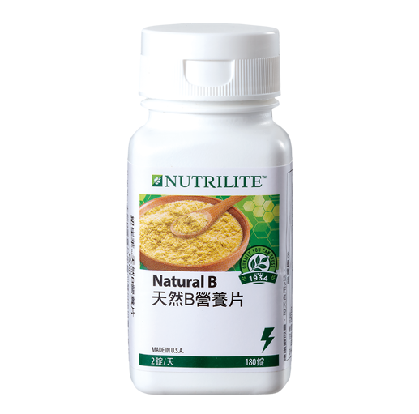

<div class="product_detail_content">
    <div class="picture">
        <div id="owl-demo" class="owl-carousel owl-theme">
            <div class="item"><span class="volume">180錠</span></div>
        </div>
    </div>
    <div class="infomation">
        <h3>天然B營養片<br><span class="small">B群超能聯盟，天天增強活力</span></h3>
        <p>從能量代謝到紅血球生成，維生素B群都是關鍵營養素，身體無法儲存水溶性維生素，且壓力、熬夜、吸菸、飲酒、服藥都會加速消耗。忙碌緊張的現代人需要天天補充，幫助增強體力，維持最佳狀態！</p>
        <h4>產品特色</h4>
        <ul class="list_dot">
            <li>7種維生素B的完整補充: 維生素B<sub>1</sub>、維生素B<sub>2</sub> 、菸鹼素、 泛酸、維生素B<sub>6</sub>、 葉酸、 維生素B<sub>12</sub></li>
            <li>來自天然且營養豐富的酵母，容易被人體吸收</li>
            <li>有助於維持能量與胺基酸的正常代謝，增進皮膚、心臟、神經系統、黏膜及消化系統的健康、形成紅血球及維持正常型態。</li>
        </ul>
        <!-- <a class="download" href="pdf/products_natural_b.pdf" target="_blank">營養成分PDF</a> -->
        <div class="btnWrap">
            <div class="showDetail">營養成分</div>
            <a class="download" href="pdf/products_natural_b.pdf" target="_blank">下載PDF</a>
            <a class="buynow" href="" target="_blank">立即購買</a>
        </div>
        <div class="detailTable">
            <table class="tableizer-table">
                <thead>
                    <tr class="tableizer-firstrow">
                        <th>重要營養素</th>
                        <th>2錠含</th>
                    </tr>
                </thead>
                <tbody>
                    <tr>
                        <td>維生素B<sub>1</sub></td>
                        <td>2.4 毫克</td>
                    </tr>
                    <tr>
                        <td>維生素B<sub>2</sub></td>
                        <td>2.4 毫克</td>
                    </tr>
                    <tr>
                        <td>維生素B<sub>6</sub></td>
                        <td>2.4 毫克</td>
                    </tr>
                    <tr>
                        <td>維生素B<sub>12</sub></td>
                        <td>4 微克</td>
                    </tr>
                    <tr>
                        <td>菸鹼素</td>
                        <td>13.2 毫克NE</td>
                    </tr>
                    <tr>
                        <td>葉酸</td>
                        <td>300 微克</td>
                    </tr>
                    <tr>
                        <td>泛酸</td>
                        <td>10 毫克</td>
                    </tr>
                    <tr>
                        <td>鈣</td>
                        <td>190 毫克</td>
                    </tr>
                </tbody>
            </table>
        </div>
    </div>
</div>
